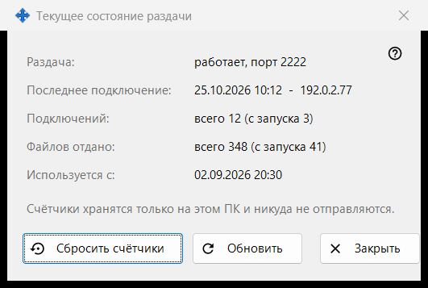
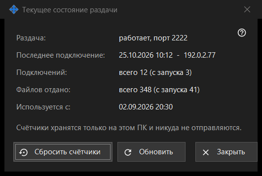

Текущее состояние раздачи
Назначение
Показывает текущее состояние раздачи и её простые счётчики. Окно открывается по ссылке «Статистика» главного окна.


Порядок действий
- Посмотрите состояние в первой строке.
- Проверьте последнее подключение, число подключений и отданных файлов.
- «Обновить» читает свежие значения.
- «Сбросить счётчики» начинает подсчёт заново.
- «Закрыть» закрывает окно.
Элементы окна
Состояние
«Раздача:» говорит, работает ли раздача и на каком порту, выключена ли она или нет связи с сервером. «Используется с:» показывает, когда раздача началась.
Счётчики
«Последнее подключение:» показывает время последнего телефона. «Подключений:» и «Файлов отдано:» показывают итог и в скобках число с последнего запуска. Счётчики хранятся только на этом ПК и никуда не отправляются.
Обновить и сбросить
«Обновить» заново читает значения с сервера. «Сбросить счётчики» сначала спрашивает подтверждение: прежние значения восстановить не получится. Если сброс не удался, кнопка показывает «Сброс не удался». «Закрыть» закрывает окно.
Настройки менеджера · Настройки общего доступа SFTP · Настройки сервера обмена